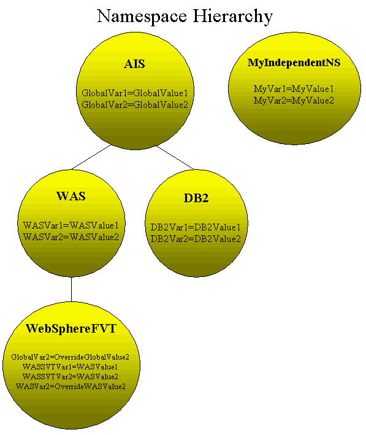

Last updated: August 26, 2011
Installation and Configuration
Error Code Reference
Unlike the VAR service, any variables set in a namespace will persist across stops and restarts of STAF with no additional steps required by the user. This will be done by immediately updating an XML file when any updates are made to namespaces.
Here's an example of a namespace hierarchy:

Download the NamespaceV103.zip/tar file from Get STAF Services into a local directory (e.g. C:/STAF/services or /usr/local/staf/services) and extract it.
Add the following statement to your staf.cfg file:
SERVICE <Service Name> LIBRARY JSTAF EXECUTE <Service Jar File Name> \
PARMS "[DIRECTORY <Directory>] [FILENAME <FileName>]"
where:
Examples:
SERVICE Namespace LIBRARY JSTAF EXECUTE {STAF/Config/STAFRoot}/services/namespace/Namespace.jar
SERVICE NS LIBRARY JSTAF EXECUTE C:/STAF/services/namespace/Namespace.jar \
PARMS "DIRECTORY C:/test/namespace FILENAME NS.xml"
Or, you can dynamically add the Namespace service using the SERVICE service's ADD SERVICE request.
In most cases, the way that you would use this service is that you would designate a system as the Namespace Server. That system would have STAF installed, plus the Namespace service with the SERVICE configuration statement in the configuration file that is shown above. Assuming that the machine name for the Namespace server is server1 and the registered service name is Namespace, an example of the command line interface to create a namespace is:
STAF server1 Namespace CREATE NAMESPACE AIS DESCRIPTION "Global AIS Namespace"
The only reserved name for a namespace is the string NONE, case insensitive. This string will be used to represent a root namespace -- a namespace that does not have a parent.
NAMESPACE specifies the name of the namespace to create. This can be any string (except for NONE, case insensitive, which is reserved). This option will resolve variables.
DESCRIPTION specifies a textual description of the new namespace.
PARENT specifies the name of the parent namespace that this namespace should inherit variables from. The parent namespace must exist. If the PARENT option is not specified, the new namespace will have no parent and will not inherit any variables. This can also be achieved by specifying NONE (case-insensitive). This option is optional. This option will resolve variables.
This command requires trust level 3.
Upon successful return, the result buffer will be empty.
CREATE NAMESPACE AIS DESCRIPTION "Global AIS Namespace"
CREATE NAMESPACE WAS PARENT AIS DESCRIPTION "Global WebSphere Namespace"
NAMESPACE specifies the name (case-insensitive) of the namespace to be modified. This option will resolve variables.
DESCRIPTION specifies the new description for this namespace.
PARENT specifies the name (case-insensitive) of the new parent for this namespace. This option will resolve variables. Be aware that any children of this namespace will keep this namespace as their parent and will move to the new hierarchy location as well. To specify that the namespace should be modified to have no parent (a root namespace), then specify NONE (case-insensitive).
At least one of the DESCRIPTION or PARENT options must be specified, but both may specified as well.
This command requires trust level 3.
Upon successful return, the result buffer will be empty.
MODIFY NAMESPACE AIS DESCRIPTION "My root namespace"
MODIFY NAMESPACE WebSphereSVT PARENT WAS
MODIFY NAMESPACE WAS DESCRIPTION "WAS Namespace" PARENT None
DELETE NAMESPACE <Name> <VAR <Key>... | CONFIRM>
NAMESPACE specifies the name (case-insensitive) of a namespace. This option will resolve variables.
VAR specifies the key (case-insensitiveI) of a variable to delete from the namespace. This option may appear more than one time. This option will resolve variables.
CONFIRM indicates that you want to delete the namespace and any variables directly contained within it. If the namespace has any child namespaces, their parents will be changed to be the parent of the deleted namespace.
You cannot specify both the VAR and CONFIRM options.
This command requires trust level 4 if deleting a namespace or trust level 3 if deleting a variable from a namespace.
Upon successful return, the result buffer will be empty.
DELETE NAMESPACE AIS VAR GlobalVar1
DELETE NAMESPACE WAS VAR WASVar1 VAR WASVar2
DELETE NAMESPACE WebSphereSVT CONFIRM
DELETE NAMESPACE WAS CONFIRM
The LIST command may be used to list all namespaces or variables defined within a namespace, or the settings for the service, depending on the option(s) specified.
LIST [NAMESPACES | <NAMESPACE <Name> [ONLY]> | SETTINGS]
NAMESPACES specifies to list all namespaces. This is the default.
NAMESPACE specifies the name (case-insensitive) of a namespace for which its variables will be listed. This option will resolve variables.
ONLY specifies to list only the variables defined directly in the specified namespace. None of the variables from any parents of this namespace will be listed. If the ONLY option is not specified, all variables from the given namespace will be listed as well as any variables from parent namespaces which were not overridden n this namespace.
SETTINGS specifies to list the settings for the service.
If neither the NAMESPACE nor NAMESPACES nor SETTINGS option is specified, a list of the namespaces will be returned.
This command requires trust level 2.
Upon successful return,
| Definition of map class STAF/Service/Namespace/NamespaceInfo | |||
|---|---|---|---|
| Description: This map class represents a namespace. | |||
| Key Name | Display Name | Type | Format / Value |
| name | Name | <String> | |
| description | Description | <String> | |
| parent | Parent | <String> | <None> | |
Notes:
| |||
| Definition of map class STAF/Service/Namespace/VarInfo | |||
|---|---|---|---|
| Description: This map class represents a variable defined in a namespace. | |||
| Key Name | Display Name | Type | Format / Value |
| key | Key | <String> | |
| value | Value | <String> | |
| namespace | Namespace | <String> | |
Notes:
| |||
| Definition of map class STAF/Service/Namespace/Settings | |||
|---|---|---|---|
| Description: This map class represents the settings for the service. | |||
| Key Name | Display Name | Type | Format / Value |
| directory | Directory | <String> | |
| filename | File Name | <String> | |
Notes:
| |||
For the following examples, assume that the namespaces are defined as shown in the example XML file in the Namespaces XML File section.
LIST NAMESPACES
Result: If the request is submitted from the command line, the result in the table format could look like:
Name Description Parent --------------- -------------------------- ------ AIS Global AIS Namespace <None> DB2 Global DB2 Namespace AIS MyIndependentNS User Independent Namespace <None> WAS Global WebSphere Namespace AIS WebSphereSVT WebSphere SVT Namespace
LIST NAMESPACE WebSphereSVT ONLY
Result: If the request is submitted from the command line, the result in the table format could look like:
Key Value Namespace ---------- -------------------- ------------ GlobalVar2 OverrideGlobalValue2 WebSphereSVT WASSVTVar1 WASSVTValue1 WebSphereSVT WASSVTVar2 WASSVTValue2 WebSphereSVT WASVar2 OverrideWASValue2 WebSphereSVT
LIST NAMESPACE WebSphereSVT
Result: If the request is submitted from the command line, the result in the table format could look like:
Key Value Namespace ---------- -------------------- ------------ GlobalVar2 OverrideGlobalValue2 WebSphereSVT WASSVTVar1 WASSVTValue1 WebSphereSVT WASSVTVar2 WASSVTValue2 WebSphereSVT WASVar2 OverrideWASValue2 WebSphereSVT WASVar1 WASValue1 WAS GlobalVar1 GlobalValue1 AIS
LIST SETTINGS
Result: If the request is submitted from the command line, the result could look like:
Directory: C:\STAF\data\STAF\service\namespace File Name: Namespaces.xml
The QUERY command may be used to query information about a single namespace or to view the namespace hierarchy from the given namespace down the hierarchy through all leaf namespaces.
QUERY NAMESPACE <Namespace> [TREE]
NAMESPACE specifies the name (case-insensitive) of the namespace to query. This option will resolve variables.
TREE indicates to return the tree hierarchy view from the given namespace down through all child leaf namespaces.
This command requires trust level 2.
Upon successful return:
| Definition of map class STAF/Service/Namespace/Query | |||
|---|---|---|---|
| Description: This map class represents detailed information about a namespace. | |||
| Key Name | Display Name | Type | Format / Value |
| name | Name | <String> | |
| description | Description | <String> | |
| parent | Parent | <String> | <None> | |
| children | Children | <List> of <String> | |
Notes:
| |||
| Definition of map class STAF/Service/Namespace/QueryTree | |||
|---|---|---|---|
| Description: This map class represents the namespace and its children in a hierarchical manner. | |||
| Key Name | Display Name | Type | Format / Value |
| name | Name | <String> | |
| children | Children | <List> of <Map:STAF/Service/Namespace/QueryTree> | |
For the following examples, assume that the namespaces are defined as shown in the example XML file in the Namespaces XML File section.
QUERY NAMESPACE AIS
Result: If the request is submitted from the command line, the result, in the default format, could look like:
{
Name : AIS
Description: Global AIS Namespace
Parent :
Children : [
DB2
WAS
]
}
QUERY NAMESPACE AIS TREE
Result: If the request is submitted from the command line, the result, in the default format, would look like:
{
Name : AIS
Children: [
{
Name : DB2
Children: []
}
{
Name : WAS
Children: [
{
Name : WebSphereSVT
Children: []
}
]
}
]
}
The SET command creates or modifies one or more variables within a namespace.
SET VAR <Key=Value> [VAR <Key=Value>] NAMESPACE <Name>
VAR specifies the key and value of the variable to set, separated by "=". This parameter may appear 1 or more times.
NAMESPACE specifies the name (case-insensitiveI) of the namespace in which to create the variable(s). This option will resolve variables.
This command requires trust level 3.
On a successful return, the result buffer will be empty.
SET VAR GlobalVar2=GlobalValue2 NAMESPACE AIS
SET VAR GlobalVar2=MyNewValue NAMESPACE AIS
SET VAR WASSVTVar1=WASSVTValue1 VAR GlobalVar2=OverrideGlobalValue2 NAMESPACE WebSphereSVT
The GET command gets the value of a particular variable within a namespace. If the variable does not exist in the specified namespace, the parent namespace will be checked and so on up the hierarchy. The value for the first instance of the variable found will be returned.
GET VAR <Key> NAMESPACE <Name>
VAR specifies the key (case-insensitive) of the variable that you want to get the value of. This option will resolve variables.
NAMESPACE specifies the name (case-insensitive) of the namespace in which to begin looking for the variable. This option will resolve variables.
This command requires trust level 2.
On a successful return, the result buffer will contain the value for the first instance of the variable found.
For the following examples, assume that the namespaces are defined as shown in the example XML file in the Namespaces XML File section.
GET VAR GlobalVar2 NAMESPACE AIS
Result:
GlobalValue2
GET VAR GlobalVar2 NAMESPACE WebSphereSVT
Result:
OverrideGlobalValue2
GET VAR GlobalVar1 NAMESPACE WebSphereSVT
Result:
GlobalValue1
STAF server1 Namespace VERSION
Output:
1.0.3
STAF server1 Namespace HELP
Output:
Namespace Service Help CREATE NAMESPACE <Name> DESCRIPTION <Description> [PARENT <Name>] MODIFY NAMESPACE <Name> [DESCRIPTION <Description>] [PARENT <Name>] DELETE NAMESPACE <Name> < VAR <Key>... | CONFIRM > LIST [NAMESPACES | <NAMESPACE <Name> [ONLY]> | SETTINGS] QUERY NAMESPACE <Name> [TREE] SET VAR <Key=Value> [VAR <Key=Value>]... NAMESPACE <Name> GET VAR <Key> NAMESPACE <Name> VERSION HELP
In addition to the common STAF return codes, the following service
return codes are defined for the Namespace service:
| Error Code | Meaning | Comment |
| 4001 | Data storage error | An error occurred saving namespaces data to persistent storage. Additional information about the error is put into the STAF Result. |
The Namespace service maintains a global log where it writes an entry when:
[<Orig machine> <Orig handle name> <Orig handle] <Request>
The logname for the Namespace service is the name under which the service is registered.
Here is an example of what a Namespace service log (with the Namespace service's registered name begin NS) could look like shown via a request from the command line in the table format:
C:\>STAF local LOG QUERY GLOBAL LOGNAME NS
Response
--------
20051016-16:43:24 Start Initialized the NS service
20051016-16:44:47 Info [local://local STAX/Job/1 27] CREATE NAMESPACE WebSpher
eSVT DESCRIPTION WebSphere SVT Namespace PARENT WAS
20051016-16:44:47 Info [local://local STAX/Job/1 27] SET NAMESPACE WebSphereSV
T VAR WASSVTVar1=WASSVTValue1 VAR WASSVTVar2=WASSVTValu
e2 VAR WASVar2=OverrideWASValue2 VAR GlobalVar2=Overrid
eGlobalValue2
20051016-16:44:47 Info [local://local STAX/Job/1 27] CREATE NAMESPACE DB2 DESC
RIPTION Global DB2 Namespace PARENT AIS
20051016-16:44:48 Info [local://local STAX/Job/1 27] SET NAMESPACE DB2 VAR DB2
Var1=DB2Value1 VAR DB2Var2=DB2Value2
20051016-16:44:52 Info [local://local STAX/Job/1 27] DELETE NAMESPACE WEBSpher
eSVT CONFIRM
20051016-16:44:53 Info [local://local STAX/Job/1 27] DELETE NAMESPACE DB2 CONF
IRM
20051016-16:46:42 Stop Terminating the NS service
Unlike the VAR service, any variables set in a namespace will persist across stops and restarts of STAF with no additional steps required by the user. This will be done by immediately updating an XML file when any updates are made to namespaces.
<!--
STAF Namespaces Document Type Definition (DTD)
This DTD module is identified by the SYSTEM identifier:
SYSTEM 'resources/Namespaces.dtd'
-->
<!ELEMENT namespaces (namespace)*>
<!ELEMENT namespace (var*, namespace*)>
<!ATTLIST namespace
name CDATA #REQUIRED
description CDATA #REQUIRED
>
<!ELEMENT var (#PCDATA)>
<!ATTLIST var
key CDATA #REQUIRED
value CDATA #REQUIRED
>
The Namespace service stores namespaces and their variables in an XML file. By default the file is named Namespaces.xml and is located in directory {STAF/DataDir}/service/<Service Name (lower-case)>. To override the storage location, you can specify the DIRECTORY and/or FILENAME options in the PARMS value when registering the Namespace service. See the Installation and Configuration section for more information on setting these parameters.
The Namespace service immediately updates this XML file at the end of each successful CREATE, MODIFY, DELETE, or SET request.
For example, on Windows, the Namespaces xml file will be stored in C:\STAF\data\STAF\service\ns\Namespacees.xml if the Namespace service is registered as NS with no parameters and STAF is installed at C:\STAF using the default STAF instance name of STAF.
Here's an example of a Namespaces xml file:
<?xml version="1.0" encoding="UTF-8"?>
<!DOCTYPE namespaces SYSTEM "resources/Namespaces.dtd">
<namespaces>
<namespace description="Global AIS Namespace" name="AIS">
<var key="GlobalVar1" value="GlobalValue1"/>
<var key="GlobalVar2" value="GlobalValue2"/>
<var key="GlobalVar3" value="GlobalValue3"/>
<namespace description="Global DB2 Namespace" name="DB2">
<var key="DB2Var1" value="DB2Value1"/>
<var key="DB2Var2" value="DB2Value2"/>
</namespace>
<namespace description="Global WebSphere Namespace" name="WAS">
<var key="WASVar1" value="WASValue1"/>
<var key="WASVar2" value="WASValue2"/>
<namespace description="WebSphere SVT Namespace" name="WebSphereSVT">
<var key="GlobalVar2" value="OverrideGlobalValue2"/>
<var key="WASSVTVar1" value="WASSVTValue1"/>
<var key="WASSVTVar2" value="WASSVTValue2"/>
<var key="WASVar2" value="OverrideWASValue2"/>
</namespace>
</namespace>
</namespace>
<namespace description="User Independent Namespace" name="MyIndependentNS">
<var key="MyVar1" value="MyValue1"/>
<var key="MyVar2" value="MyValue2"/>
</namespace>
</namespaces>
For backup purposes, the Namespace service makes a temporary copy of the Namespaces xml file at the following times:
These files are temporary because they are stored in STAF's temporary directory ({STAF/DataDir}/tmp). STAF's temporary directory and all of its contents are deleted whenever STAF is restarted.
The directory where these temporary files are stored is:
{STAF/DataDir}/tmp/service/<Service Name (lower-case)>.
For example, on Windows, this directory could be C:\STAF\data\STAF\tmp\service\ns.
The format of the names of the copied Namespace xml files will be:
<Namespace File Name>.<Phase>.<Current Time (milli-seconds)>
So, for example, the temporary directory for the Namespace service could contain files such as:
Namespaces.xml.init.1129499304537 Namespaces.xml.delete.1129499341040 Namespaces.xml.delete.1129499341200 Namespaces.xml.term.1129499418842
Also, a backup of the Namespaces xml file named <Namespace FileName>.backup is created immediately before the Namespace service updates the Namespaces.xml file during a CREATE, MODIFY, DELETE, or SET request. This backup file is located in the namespace directory along with the Namespaces xml file.